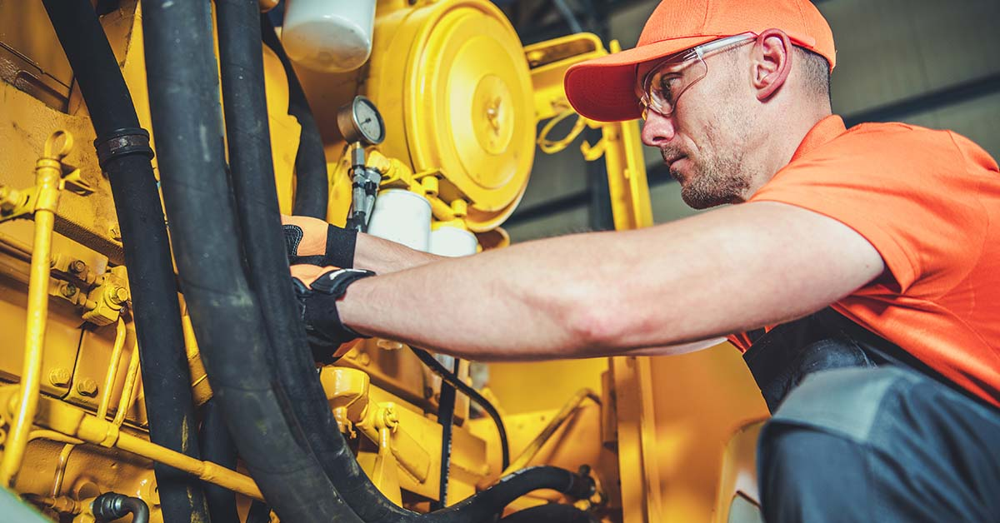

Esta web utiliza cookies para que podamos ofrecerte la mejor experiencia de usuario posible. La información de las cookies se almacena en tu navegador y realiza funciones tales como reconocerte cuando vuelves a nuestra web o ayudar a nuestro equipo a comprender qué secciones de la web encuentras más interesantes y útiles.
Mantenimiento preventivo de maquinaria

Mantenimiento preventivo de maquinaria
Investigar antes de comprar, para adquirir la mejor maquinaria, es clave. Como también lo es, una vez que la maquinaria está en uso, realizar un mantenimiento preventivo para alargar su vida útil.
Y de esto último es de lo que vamos a hablarte a lo largo de estas líneas. Quédate porque esto te interesa si quieres sacar el máximo partido a tu compra de maquinaria de movimiento de tierras.
Conoce toda nuestra maquinaria
Consejos y mejores prácticas para el mantenimiento de equipos
Mantener la maquinaria en perfecto estado, es una garantía para alargar su vida útil. De esto no cabe duda. Y además, ayuda a prevenir fallos con reparaciones muy costosas, a mejorar la eficiencia y a asegurar la seguridad de los operarios.
En esta guía, vamos a explorar consejos de expertos y cuáles son las mejores prácticas para mantener tus equipos en perfecto estado.
Establecer un plan de mantenimiento
El primer paso para un mantenimiento eficaz es desarrollar un plan al detalle.
Hay que realizar un calendario con las tareas de mantenimiento específicas para cada máquina, así como la frecuencia con la que deben realizarse. Un buen plan de mantenimiento debe ser dinámico, permitiendo ajustes según sea necesario.
Capacitación del personal
Es vital que el personal que se encarga del mantenimiento esté bien preparado y conozca las especificaciones técnicas de cada equipo.
Y respecto a esto, tienes que saber que la capacitación continua asegura que el personal esté al día con las mejores prácticas y nuevas tecnologías en mantenimiento. Esto, también se considera mantenimiento preventivo.
Inspecciones regulares
Las inspecciones regulares ayudan a identificar posibles problemas antes de que se conviertan en fallos mayores. Durante estas inspecciones, se deben revisar aspectos clave como lubricación, niveles de fluidos, estado de componentes eléctricos y mecánicos, y cualquier signo de desgaste o daño.
Uso de lubricantes adecuados
La lubricación de todas las partes de la maquinaria es crucial para su buen funcionamiento. Utilizar el lubricante adecuado para cada tipo de máquina prolonga la vida útil de los componentes y reduce el riesgo de fallos. Es importante seguir las recomendaciones del fabricante en cuanto a tipo de lubricante y frecuencia de aplicación.
Limpieza y cuidado general
Mantener los equipos limpios es esencial para su funcionamiento. La acumulación de suciedad y residuos puede causar problemas como sobrecalentamiento y desgaste prematuro. Se deben implementar procedimientos de limpieza regular, prestando especial atención a las áreas críticas.
Documentación detallada
Registrar todas las actividades de mantenimiento en un historial detallado permite un seguimiento preciso del estado de los equipos.
Esta documentación es útil para identificar patrones de fallos, planificar mantenimientos futuros y tomar decisiones informadas sobre reparaciones o reemplazos.
Monitorización de condiciones
El uso de tecnologías de monitorización, como sensores y software de análisis, permite supervisar las condiciones operativas de la maquinaria en tiempo real. Esto facilita la detección temprana de problemas potenciales y permite intervenciones preventivas antes de que se produzcan fallos graves.
Reemplazo de piezas desgastadas
Es fundamental reemplazar las piezas que muestran signos de desgaste antes de que fallen por completo. Esto no solo evita tiempos de inactividad inesperados, sino que también protege otros componentes de daños adicionales.
Colaboración con fabricantes
Mantener una relación estrecha con los fabricantes de maquinaria de movimiento de tierras es un punto a tu favor. Y en nuestro caso, nos gusta realizar seguimiento con todos nuestros clientes para asegurarnos de que las máquinas que han adquirido en Agrotécnica Los Antonios, funciona de forma correcta.
Nuestro equipo de técnicos y especialistas proporciona asesoramiento técnico, actualizaciones de equipos y programas de mantenimiento recomendados para mejorar la eficiencia y durabilidad de nuestra maquinaria.
Esto, si eres cliente, ya lo sabes, y si aún no, tienes que saber que cuando compras una de nuestras máquinas estás comprando mucho más que eso, estás comprando una solución integral y un acompañamiento experto durante toda la vida útil de tu maquinaria.
Programas de mantenimiento preventivo para alargar la vida útil de la maquinaria
Que tu maquinaria esté en perfecto estado uso tras uso, y año tras año, para que tu inversión sea rentable. ¿Cómo lo vas a conseguir? Con un mantenimiento de maquinaria agrícola adecuado.
Definición y objetivos
Un programa de mantenimiento preventivo es una estrategia organizada y sistemática que busca prevenir fallos antes de que ocurran, mediante la realización regular de tareas de mantenimiento planificadas. Los objetivos principales son reducir el tiempo de inactividad, optimizar el rendimiento de los equipos y extender su vida útil.
Componentes de un programa de mantenimiento preventivo
Un programa efectivo debe incluir varios componentes clave. Y son los que te contamos en los siguientes puntos.
Inventario de maquinaria
Listar todos los equipos que forman parte del programa, incluyendo sus especificaciones técnicas y manuales de mantenimiento.
Calendario de mantenimiento
Establecer un cronograma detallado con las tareas específicas y su frecuencia.
Procedimientos de mantenimiento
Definir claramente los pasos a seguir para cada tarea, incluyendo herramientas y materiales necesarios.
Registro de mantenimiento
Documentar todas las actividades realizadas, problemas encontrados y soluciones aplicadas.
Evaluación y actualización del programa
Un programa de mantenimiento no es estático; debe ser evaluado y actualizado regularmente para asegurar su efectividad. La retroalimentación del personal de mantenimiento, el análisis de datos históricos y las nuevas tecnologías disponibles pueden influir en las mejoras del programa.
Beneficios de implementar un programa de mantenimiento preventivo
Implementar un programa de mantenimiento preventivo bien estructurado ofrece numerosos beneficios. Descúbrelas.
Reducción de costes
Al evitar fallos graves y reparaciones costosas, se optimizan los recursos y se reducen los gastos operativos.
Mayor seguridad
La maquinaria de alta calidad con un buen mantenimiento, es menos propensa a fallar y causar accidentes, protegiendo al personal y la infraestructura.
Mejora del rendimiento
La maquinaria operando en condiciones óptimas garantiza una mayor eficiencia y productividad.
Extensión de la vida útil
El cuidado regular y preventivo prolonga la vida útil de los equipos, maximizando la inversión realizada en ellos.
Ejemplos de programas de mantenimiento preventivo
De forma general te damos algunos ejemplos para que entiendas la importancia de realizar un mantenimiento preventivo en tu maquinaria, sea del tipo que sea.
Programa para maquinaria industrial
Un programa típico para maquinaria industrial puede incluir inspecciones diarias, semanales y mensuales, enfocándose en diferentes aspectos del equipo. Las inspecciones diarias pueden centrarse en verificar niveles de fluidos y estado general, mientras que las semanales y mensuales pueden incluir tareas más detalladas como la revisión de componentes críticos y pruebas de rendimiento.
Programa para equipos de construcción y movimiento de tierras
Los equipos de construcción y la maquinaria de movimiento de tierras, como niveladoras, subdoladores, excavadoras, y mucho más, requieren un mantenimiento riguroso debido a las condiciones exigentes en las que operan. Un programa efectivo incluye la revisión y lubricación diaria de partes móviles, inspecciones semanales de sistemas hidráulicos y eléctricos, y mantenimiento mensual de motores y trenes de rodaje.
Programa para vehículos de transporte
Los vehículos de transporte, ya sean flotas de camiones o vehículos de empresa, también se benefician de programas de mantenimiento preventivo. Estos programas pueden abarcar revisiones diarias de neumáticos y niveles de aceite, inspecciones semanales de sistemas de frenos y suspensión, y mantenimiento mensual de motores y transmisiones.
Implementación de tecnologías avanzadas
La incorporación de tecnologías avanzadas, como la monitorización remota y el mantenimiento predictivo, mejora aún más los programas de mantenimiento preventivo.
Estas tecnologías permiten una supervisión continua y la predicción de fallos antes de que ocurran, facilitando intervenciones más oportunas y efectivas.
Monitorización remota
El uso de sensores y dispositivos IoT permite la monitorización remota de las condiciones operativas de los equipos. Los datos recopilados en tiempo real se analizan para identificar desviaciones y anomalías, permitiendo acciones correctivas inmediatas.
Mantenimiento predictivo
El mantenimiento predictivo va un paso más allá del preventivo, utilizando algoritmos de inteligencia artificial y análisis de datos para prever fallos antes de que sucedan. Esta tecnología se basa en el análisis de tendencias y patrones en los datos operativos, ofreciendo una mayor precisión y eficiencia en la planificación de intervenciones.
Caso de éxito: Mantenimiento preventivo en la industria manufacturera
Un ejemplo notable de la implementación exitosa de un programa de mantenimiento preventivo es el caso de una planta de manufactura que logró reducir sus tiempos de inactividad en un 30% y aumentar la vida útil de sus equipos en un 25%.
Esto se logró mediante la implementación de un plan de mantenimiento detallado, la capacitación continua del personal y el uso de tecnologías de monitoreo avanzado.
Desafíos y soluciones en el mantenimiento preventivo
Un plan de mantenimiento preventivo, puede conllevar algunos desafíos. Los cuales te contamos en las próximas líneas. Pero, con información y una buena anticipación y planificación, vas a poder hacer frente a estos desafíos cuando se te presenten.
Desafío 1: Resistencia al cambio
Implementar un nuevo programa de mantenimiento puede enfrentar resistencia por parte del personal. Para superar este desafío, es crucial involucrar a todos los niveles de la organización en el proceso de planificación y capacitación, destacando los beneficios a largo plazo del mantenimiento preventivo.
Desafío 2: Costes iniciales
El coste inicial de establecer un programa de mantenimiento preventivo puede ser elevado. Sin embargo, estos costes deben ser vistos como una inversión que se recuperará a través de la reducción de fallos y la extensión de la vida útil de los equipos. Una planificación cuidadosa y una implementación gradual pueden ayudar a manejar estos costes.
Desafío 3: Gestión de datos
La gestión y análisis de grandes cantidades de datos puede ser compleja. La adopción de software especializado y la capacitación del personal en el uso de estas herramientas son esenciales para aprovechar al máximo la información recopilada y tomar decisiones informadas.
Sin duda, el mantenimiento preventivo de maquinaria es una estrategia esencial para cualquier industria que dependa del funcionamiento eficiente y continuo de sus equipos.
En Agrotécnica Los Antonios, entendemos la importancia del mantenimiento preventivo y estamos comprometidos a ofrecer soluciones y servicios que ayuden a nuestros clientes a alcanzar estos objetivos.
Contáctanos para obtener más información sobre cómo podemos ayudarte a implementar y mejorar tus programas de mantenimiento preventivo.